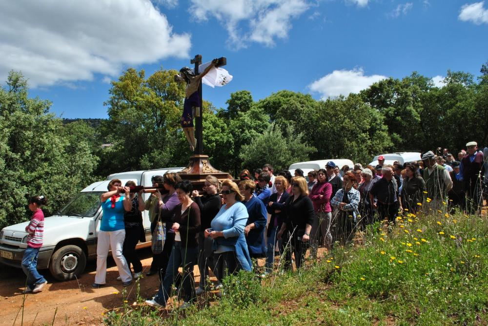
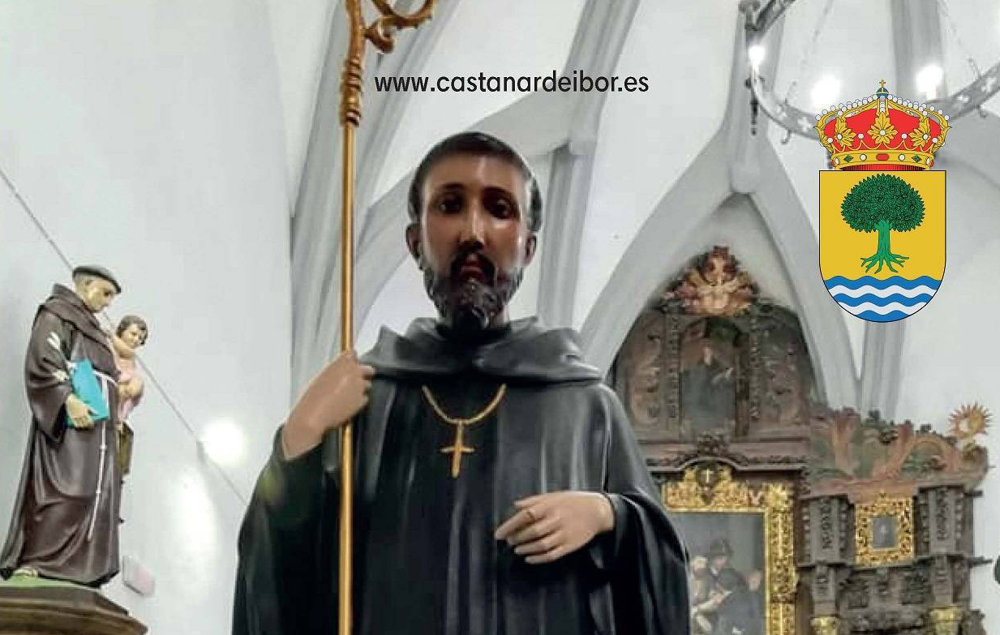

Tradiciones
Romería del Cristo de la Avellaneda
Una vez finalizada la Semana Santa, el 15 de mayo, tiene lugar esta multitudinaria romería, un evento muy esperado por
los habitantes de Castañar. A las 9:00 de la mañana, los asistentes se reúnen en la plaza del pueblo,
alrededor de la puerta de la iglesia, para comenzar los preparativos. En ese momento, se organiza y decora
cuidadosamente con flores, telas y otros ornamentos el camión en el que se transportará la imagen del Cristo.
Cuando el Cristo está listo en el vehículo, da inicio el recorrido hacia La Avellaneda, acompañado por
una gran caravana de vecinos.
Al llegar a La Avellaneda, su pueblo de destino, el Cristo es bajado del vehículo y llevado hasta la iglesia.
Allí se celebra una misa extremeña en su honor, seguida de una procesión por el lugar, en la que participan
tanto los habitantes como los visitantes.
Tras la misa y la procesión, los "romeros" se unen para disfrutar de un día de campo en un ambiente de
convivencia y celebración; se comparten comidas, bebidas y juegos entre los asistentes.
A las 19:00, los fieles se congregan nuevamente en la iglesia para preparar el regreso a Castañar. El Cristo es
subido de nuevo al vehículo y, en una procesión de coches, es trasladado de vuelta. Una vez allí, la imagen es
colocada en el altar de la iglesia, donde se da inicio a la novena que cierra el día.

Las fiestas de San Benito Abad
Cada año, el día 11 de julio, se celebran las fiestas en honor a San Benito Abad, el patrón de
Castañar de Ibor. Este día es esperado con gran entusiasmo por los habitantes del pueblo y visitantes
que llegan desde diferentes localidades para participar de la tradición.
El evento comienza con una misa en honor al santo, la cual tiene lugar en la plaza del pueblo.
En este espacio, decorado para la ocasión, se reúnen todos los fieles para rendir homenaje a San Benito
y agradecerle su protección y bendiciones a lo largo del año.
Tras la misa, se da paso a la tradicional procesión, uno de los momentos más significativos de la celebración.
La imagen de San Benito Abad, adornada con flores y luces, recorre las calles del pueblo cargada a hombros por
los vecinos. Durante el recorrido, se canta y se lanzan pétalos de flores al paso del santo,
creando una atmósfera de gran devoción.

La Virgen de Castañar
El día 15 de agosto se celebra la fiesta en honor a La Virgen de Castañar. Todo comienza con una procesión en la
que la imagen de Santa María del Castañar es acompañada desde la iglesia por los fieles al ritmo de tambores y cornetas.
Al finalizar la procesión, los asistentes tienen la oportunidad de adorar y besar a la virgen.
Posteriormente, es llevada de regreso a la iglesia, dando cierre al acto religioso.
Por la noche, la celebración continúa con una verbena popular en la que se celebran concursos y se
entregan premios.